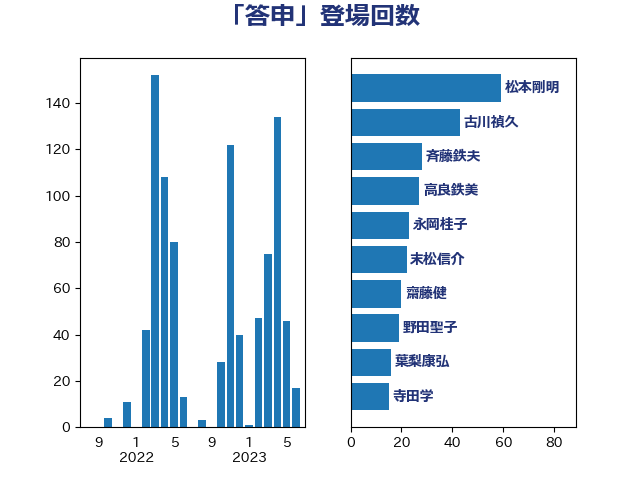

単語「答申」

| 松本剛明 | 自由民主党 | 59 回 |
| 古川禎久 | 自由民主党 | 43 回 |
| 斉藤鉄夫 | 公明党 | 28 回 |
| 高良鉄美 | 無所属 | 27 回 |
| 永岡桂子 | 自由民主党 | 23 回 |
| 末松信介 | 自由民主党 | 22 回 |
| 齋藤健 | 自由民主党 | 20 回 |
| 野田聖子 | 自由民主党 | 19 回 |
| 葉梨康弘 | 自由民主党 | 16 回 |
| 寺田学 | 立憲民主党 | 15 回 |
| 伊藤岳 | 日本共産党 | 15 回 |
| 西岡秀子 | 国民民主党 | 14 回 |
| 山口俊一 | 自由民主党 | 14 回 |
| 加藤勝信 | 自由民主党 | 11 回 |
| 馬淵澄夫 | 立憲民主党 | 10 回 |
| 鈴木義弘 | 国民民主党 | 10 回 |
| 後藤茂之 | 自由民主党 | 10 回 |
| 鈴木俊一 | 自由民主党 | 9 回 |
| 守島正 | 日本維新の会 | 9 回 |
| 津島淳 | 自由民主党 | 7 回 |
| 中川貴元 | 自由民主党 | 7 回 |
| 近藤昭一 | 立憲民主党 | 6 回 |
| 小池晃 | 日本共産党 | 6 回 |
| 吉川元 | 立憲民主党 | 6 回 |
| 金子恭之 | 自由民主党 | 5 回 |
| 西村智奈美 | 立憲民主党 | 5 回 |
| 福島みずほ | 社会民主党 | 5 回 |
| 牧義夫 | 立憲民主党 | 5 回 |
| 片山大介 | 日本維新の会 | 5 回 |
| 打越さく良 | 立憲民主党 | 5 回 |
| 岸田文雄 | 自由民主党 | 5 回 |
| 山本博司 | 公明党 | 5 回 |
| 寺田稔 | 自由民主党 | 5 回 |
| 井上哲士 | 日本共産党 | 5 回 |
| 中司宏 | 日本維新の会 | 5 回 |
| 門山宏哲 | 自由民主党 | 4 回 |
| 足立康史 | 日本維新の会 | 4 回 |
| 田村まみ | 国民民主党 | 4 回 |
| 徳永久志 | 無所属 | 4 回 |
| 岡田直樹 | 自由民主党 | 4 回 |
| 尾身朝子 | 自由民主党 | 4 回 |
| 小沢雅仁 | 立憲民主党 | 4 回 |
| 宮本岳志 | 日本共産党 | 4 回 |
| 奥野総一郎 | 立憲民主党 | 4 回 |
| 伊藤孝恵 | 国民民主党 | 4 回 |
| 高橋千鶴子 | 日本共産党 | 3 回 |
| 菊田真紀子 | 立憲民主党 | 3 回 |
| 舟山康江 | 国民民主党 | 3 回 |
| 福島伸享 | 無所属 | 3 回 |
| 礒崎哲史 | 国民民主党 | 3 回 |
| 岡本あき子 | 立憲民主党 | 3 回 |
| 古川直季 | 自由民主党 | 3 回 |
| 加田裕之 | 自由民主党 | 3 回 |
| 仁比聡平 | 日本共産党 | 3 回 |
| 井林辰憲 | 自由民主党 | 3 回 |
| 中川康洋 | 公明党 | 3 回 |
| 鬼木誠 | 立憲民主党 | 2 回 |
| 高木毅 | 自由民主党 | 2 回 |
| 鎌田さゆり | 立憲民主党 | 2 回 |
| 谷公一 | 自由民主党 | 2 回 |
| 西村康稔 | 自由民主党 | 2 回 |
| 田村貴昭 | 日本共産党 | 2 回 |
| 熊谷裕人 | 立憲民主党 | 2 回 |
| 浅野哲 | 国民民主党 | 2 回 |
| 本村伸子 | 日本共産党 | 2 回 |
| 掘井健智 | 日本維新の会 | 2 回 |
| 川田龍平 | 立憲民主党 | 2 回 |
| 山添拓 | 日本共産党 | 2 回 |
| 山口壯 | 自由民主党 | 2 回 |
| 塩川鉄也 | 日本共産党 | 2 回 |
| 城井崇 | 立憲民主党 | 2 回 |
| 和田義明 | 自由民主党 | 2 回 |
| 吉田はるみ | 立憲民主党 | 2 回 |
| 青柳陽一郎 | 立憲民主党 | 1 回 |
| 長浜博行 | 無所属 | 1 回 |
| 鈴木庸介 | 立憲民主党 | 1 回 |
| 金子恵美 | 立憲民主党 | 1 回 |
| 野間健 | 立憲民主党 | 1 回 |
| 酒井庸行 | 自由民主党 | 1 回 |
| 道下大樹 | 立憲民主党 | 1 回 |
| 輿水恵一 | 公明党 | 1 回 |
| 谷田川元 | 立憲民主党 | 1 回 |
| 西田昭二 | 自由民主党 | 1 回 |
| 落合貴之 | 立憲民主党 | 1 回 |
| 自見はなこ | 自由民主党 | 1 回 |
| 羽生田俊 | 自由民主党 | 1 回 |
| 紙智子 | 日本共産党 | 1 回 |
| 篠原豪 | 立憲民主党 | 1 回 |
| 笠浩史 | 無所属 | 1 回 |
| 竹詰仁 | 国民民主党 | 1 回 |
| 稲富修二 | 立憲民主党 | 1 回 |
| 福山哲郎 | 立憲民主党 | 1 回 |
| 石田昌宏 | 自由民主党 | 1 回 |
| 石橋林太郎 | 自由民主党 | 1 回 |
| 石川香織 | 立憲民主党 | 1 回 |
| 石川大我 | 立憲民主党 | 1 回 |
| 石垣のりこ | 立憲民主党 | 1 回 |
| 石原正敬 | 自由民主党 | 1 回 |
| 石井章 | 日本維新の会 | 1 回 |
| 石井拓 | 自由民主党 | 1 回 |
| 矢倉克夫 | 公明党 | 1 回 |
| 田名部匡代 | 立憲民主党 | 1 回 |
| 牧山ひろえ | 立憲民主党 | 1 回 |
| 泉健太 | 立憲民主党 | 1 回 |
| 河野義博 | 公明党 | 1 回 |
| 河野太郎 | 自由民主党 | 1 回 |
| 沢田良 | 日本維新の会 | 1 回 |
| 水岡俊一 | 立憲民主党 | 1 回 |
| 櫻田義孝 | 自由民主党 | 1 回 |
| 櫻井周 | 立憲民主党 | 1 回 |
| 櫛渕万里 | れいわ新選組 | 1 回 |
| 森屋隆 | 立憲民主党 | 1 回 |
| 柳ヶ瀬裕文 | 日本維新の会 | 1 回 |
| 枝野幸男 | 立憲民主党 | 1 回 |
| 東国幹 | 自由民主党 | 1 回 |
| 末次精一 | 立憲民主党 | 1 回 |
| 早坂敦 | 日本維新の会 | 1 回 |
| 徳永エリ | 立憲民主党 | 1 回 |
| 岬麻紀 | 日本維新の会 | 1 回 |
| 山田美樹 | 自由民主党 | 1 回 |
| 山田勝彦 | 立憲民主党 | 1 回 |
| 山崎正恭 | 公明党 | 1 回 |
| 小倉將信 | 自由民主党 | 1 回 |
| 宮路拓馬 | 自由民主党 | 1 回 |
| 室井邦彦 | 日本維新の会 | 1 回 |
| 大西健介 | 立憲民主党 | 1 回 |
| 大岡敏孝 | 自由民主党 | 1 回 |
| 大口善徳 | 公明党 | 1 回 |
| 堂込麻紀子 | 無所属 | 1 回 |
| 吉川赳 | 無所属 | 1 回 |
| 吉川沙織 | 立憲民主党 | 1 回 |
| 勝目康 | 自由民主党 | 1 回 |
| 務台俊介 | 自由民主党 | 1 回 |
| 前原誠司 | 国民民主党 | 1 回 |
| 倉林明子 | 日本共産党 | 1 回 |
| 伊藤孝江 | 公明党 | 1 回 |
| 伊佐進一 | 公明党 | 1 回 |
| 井出庸生 | 自由民主党 | 1 回 |
| 中川宏昌 | 公明党 | 1 回 |
| 上田清司 | 国民民主党 | 1 回 |
| 三上えり | 立憲民主党 | 1 回 |